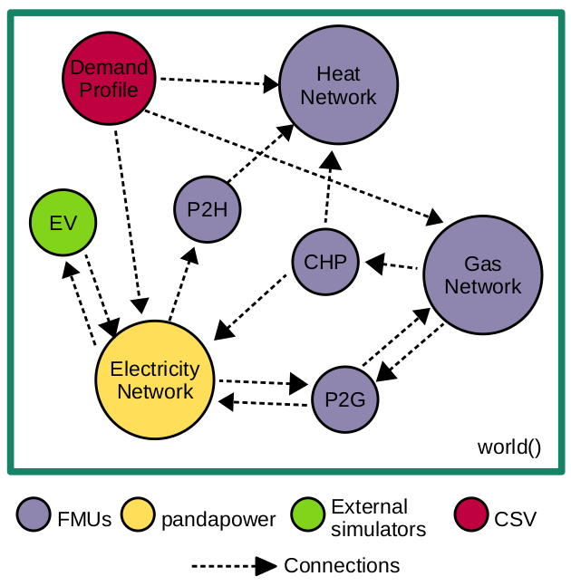

energysim documentation¶
Compatible with Python 3.8 and above.
What is energysim?¶
energysim is a Python-based co-simulation tool designed to simplify
multi-energy co-simulations. The tool was originally called FMUWorld,
since it focussed exclusively on combining Functional Mockup Units (FMUs).
It has since evolved into a general-purpose co-simulation coordinator that
supports a wide variety of energy-system simulators.
The idea behind energysim is to let users focus on high-level
applications — energy-system planning, control-strategy evaluation,
sector coupling — while the framework handles low-level tasks such as
message exchange, time-step coordination, dependency ordering, and
algebraic-loop detection.
Currently, energysim allows users to combine:
Dynamic models packaged as Functional Mockup Units (FMI 1.0 & 2.0, Co-Simulation and Model Exchange).
Pandapower networks (PF, DCPF, OPF, DCOPF).
PyPSA networks (experimental).
User-defined external simulators written in Python.
CSV data files (time-indexed profiles).
DIgSILENT PowerFactory models via the Python API.
MATLAB / GNU Octave models as
.mfunctions.Signal generators (Python lambda / function).
Standalone Python scripts.

Installation¶
energysim can be installed with pip:
pip install energysim
To install with all optional dependencies:
pip install energysim[all]
Dependencies¶
Core (always required):
NumPy
Pandas
Matplotlib
NetworkX
tqdm
PyTables (
tables)
Optional (installed lazily when the first simulator of that type is added):
Package |
When needed |
|---|---|
FMPy |
FMU simulators |
pandapower |
Powerflow simulators |
PyPSA |
PyPSA network simulators |
oct2py |
MATLAB/Octave models (Octave backend) |
MATLAB Engine |
MATLAB/Octave models (MATLAB backend) |
Plotly |
Interactive HTML dashboards |
Install adapter-specific extras with:
pip install energysim[fmu] # FMPy
pip install energysim[powerflow] # pandapower
pip install energysim[pypsa] # PyPSA
Usage¶
energysim is designed for a plug-and-play workflow. The main
component is the world object — the coordinator where all simulators,
connections, and options are registered:
from energysim import world
Initialization¶
Create a world with the basic simulation parameters:
my_world = world(
start_time=0,
stop_time=86400,
t_macro=900,
logging=True,
coupling='jacobi',
extrapolation='zero-order',
)
world() accepts the following parameters:
start_time— simulation start time in seconds (default0).stop_time— simulation stop time in seconds (default1000).t_macro— macro time-step at which variables are exchanged between simulators (default60).logging— toggle simulation progress updates (defaultFalse).res_filename— HDF5 results file name (default'es_res.h5').coupling— coupling strategy (default'jacobi'):'jacobi'— exchange all variables, then step all simulators (one-step delay in feedback loops).'gauss-seidel'— step simulators in topological order; each simulator’s outputs are immediately available to downstream simulators.'iterative'— fixed-point iteration with convergence check within each macro step (most accurate for tightly coupled systems).
extrapolation— how exchanged values are estimated between exchange points (default'zero-order'):'zero-order'— hold the last exchanged value constant.'linear'— linearly extrapolate from the two most recent values.
max_iterations— maximum fixed-point iterations per macro step whencoupling='iterative'(default10).convergence_tolerance— relative tolerance for convergence check in iterative coupling (default1e-6).
See Architecture for a detailed explanation of each coupling mode.
Adding simulators¶
Simulators are added using add_simulator():
my_world.add_simulator(
sim_type='fmu',
sim_name='plant',
sim_loc='model.fmu',
inputs=['power_cmd'],
outputs=['temperature'],
step_size=1,
)
Parameters:
sim_type— one of'fmu','powerflow','csv','external','powerfactory','matlab','script'.sim_name— unique identifier used in connections and results.sim_loc— path to the model or data file.inputs— list of input variable names (populated via connections).outputs— list of output variable names to record.step_size— micro time-step in seconds (default1).
See Adding simulators for the full reference for each simulator type.
Signals can be added with a dedicated method:
my_world.add_signal(
sim_name='setpoint',
signal=lambda t: [42.0],
step_size=1,
)
Connections between simulators¶
Once all simulators are added, their connections are specified with a dictionary mapping source outputs to destination inputs:
connections = {
'weather.temperature': 'building.T_ambient',
'weather.irradiance': 'pv.G_solar',
'pv.P_dc': 'grid.PV.p_mw',
'controller.p_cmd': ('battery.P_cmd', 'grid.Battery.p_mw'),
}
my_world.add_connections(connections)
add_connections() performs automatic validation:
Simulator existence — raises
ConnectionErrorif a referenced simulator name is not registered.Malformed variable strings — raises
ConnectionErrorif a variable string does not contain a.separator.Read-only targets — warns if a connection writes to a CSV or signal simulator (which are inherently read-only).
Variable name checking — warns if a variable name does not match the adapter’s known variables (when introspection is available).
After validation, energysim builds a dependency graph from the
connections and computes a topological execution order. If the graph
contains cycles (algebraic loops), a warning is issued and the cyclic
simulators are grouped using strongly-connected-component analysis.
Fan-out and fan-in¶
A single output can drive multiple inputs (fan-out):
connections = {
'source.y': ('sim_a.x', 'sim_b.x'),
}
Multiple outputs can feed a single input (fan-in); the last value wins:
connections = {
('source_a.y', 'source_b.y'): 'sim_c.x',
}
Initializing simulator variables¶
To set initial values before the first time-step, provide an init
dictionary via options():
initializations = {
'plant': (['temperature'], [293.15]),
'battery': (['SoC'], [0.5]),
}
my_world.options({'init': initializations})
Executing simulation¶
Run the co-simulation by calling simulate():
my_world.simulate(pbar=True)
The pbar flag toggles the tqdm progress bar.
During simulation, energysim:
Initialises all adapters (
adapter.init()).For each macro time-step:
Exchanges variables according to the coupling strategy.
Steps each simulator from t to t + t_macro.
Records outputs to the HDF5 file.
Cleans up all adapters (
adapter.cleanup()).
Extracting results¶
After simulation, retrieve results as a dictionary of DataFrames:
results = my_world.results(to_csv=True)
Options:
to_csv=True— also export each simulator’s results to a CSV file.dashboard=True— open an interactive HTML dashboard in the browser.dashboard_path='my_dashboard.html'— save the dashboard to a custom path.
Error handling¶
energysim uses a structured exception hierarchy instead of
sys.exit() calls:
EnergysimError— base class for all energysim exceptions.SimulatorVariableError— invalid variable name or type.SimulatorElementNotFoundError— element not found in a network.ConnectionError— malformed or invalid connection specification.
All exceptions can be imported from energysim.base:
from energysim.base import (
EnergysimError,
SimulatorVariableError,
SimulatorElementNotFoundError,
ConnectionError,
)
Contents
- Adding simulators
- Working with external simulators
- energysim features
- Coupling modes
- Extrapolation
- Connection validation
- Dependency graph & algebraic loops
- Variable introspection
- Adding signals
- Modify signals before exchange
- Optimal Power Flow
- Validation of FMUs
- Recording all time-steps
- Sensitivity analysis
- PowerFactory integration
- MATLAB / Octave integration
- Interactive dashboard
- System topology plot
- Error handling
- Accessing simulator internals
- Architecture
- FAQ
- OPFNotConvergedError
- FMU initialisation error
- SimulatorVariableError / SimulatorElementNotFoundError
- ConnectionError
- Simulation hangs / runs very slowly
TypeError: 'SimEntry' object is not subscriptable- Read-only simulator warnings
- Algebraic loop warnings
- Iterative coupling does not converge
- Missing optional dependencies
- PowerFactory:
sim_namemust match the project name - Octave:
nargin: invalid function name - Which coupling mode should I use?